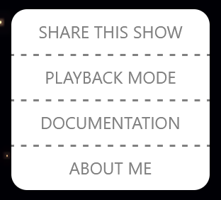
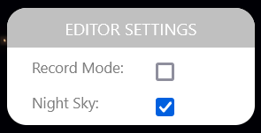
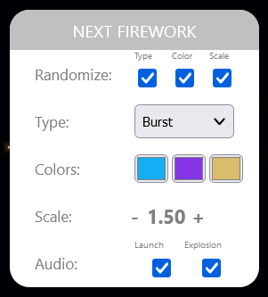
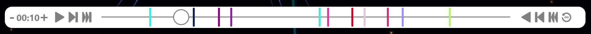
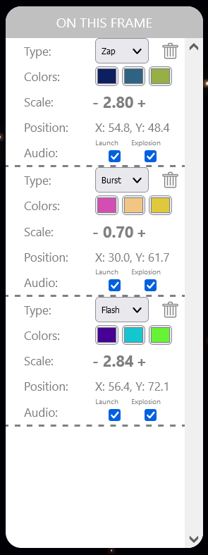
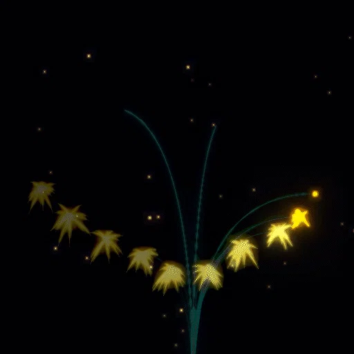

Intro
Welcome to the documentation for my Three.js based firework site. This site was built to enable people to create fun, colorful, and explosive firework displays and easily share them. The purpose of this documentation page is to provide context for the site and describe how the tools can be used to create and share your own firework shows.
This site was created using JavaScript with Three.js. If you're interested in looking at or experimenting with the code, it's available here on GitHub. A couple years ago, I made a Houdini tool for creating fireworks with mouse clicks, and I built this site because I wanted to enable people to do the same thing in a real-time interactive setting on the web. I found Three.js was extremely flexible for procedurally creating the geometry for the fireworks, and I was able to build a timeline-based editing system around that relatively quickly.
Getting Started
When you first visit the website, you'll see a starry night sky and a handful of menus. Click anywhere in the night sky to launch a firework! The firework will rocket toward the point you clicked and explode when it reaches it. In this mode, the fireworks won't be recorded — this is just a testing ground to launch as many fireworks as you'd like and play with the settings.
If when you load the site you instead see a big play button, that means you loaded a URL that already contains a firework show! Press play to watch the show, and press the button in the upper left at any time to share or edit the show. Here's an example show I created!
User Interface
Toggling the UI
The button in the upper left can be pressed at any time to hide or show the various interface elements on the site.

The Main Menu
The menu in the upper left, or the Main Menu, has a handful of basic functions:
Share this show: Copies the current URL to the clipboard. This is how you can share a custom firework show with someone, or save a show you've created for later.
Playback mode: Switches the site from edit to playback mode, where you can view a recorded show without distractions. In playback mode, this button is labeled “Edit mode” to return to editing.
The third option, labeled Documentation, brings you to this page, and the fourth option, About me, links to my portfolio site, which was also created using Three.js.

Editor Settings
The Editor Settings menu has two options: Record Mode and Night Sky.
The record mode option enables recording; if you toggle on record mode, you'll see the editing tools appear. Using record mode is how you can create a custom firework show and share it or save it for later.
The other setting, Night Sky, toggles the background starry sky on and off.

Next Firework
In the Next Firework menu, you'll find all the parameters that will be applied to the next firework you create. This includes randomization options, explosion type, colors, explosion scale, and audio. If a randomization option is enabled, that parameter will be randomized next time a firework is created.
The options in Next Firework apply to recorded fireworks as well as unrecorded fireworks in sandbox mode, so feel free to test out the parameters in this menu to visualize the different options with record mode toggled off.
The Timeline

The timeline includes all the tools you need for previewing and creating a firework show. On the far left is the length of the timeline, which can be lengthened to a maximum of one minute. Adjacent to the length controls, the play / pause button will play or pause playback, the next button will jump to the next firework on the timeline, and the fast forward button will skip to the end.
Scrub through time by pressing and dragging anywhere on the timeline. On the right-hand side, there are buttons to reverse playback, jump to the previous firework, and skip back to the start. Finally, the loop button toggles between infinite looping and a single playback.
When a firework is recorded, it will appear on the timeline as a marker (matching the primary color of the firework). When dragging the timeline position indicator, it automatically snaps to nearby firework markers on the timeline.

On This Frame
The various parameters of any given firework that explodes on the current frame in the timeline appear in the “On This Frame” menu. Firework parameters include everything available in the Next Firework menu, as well as indicating the firework's screen position coordinates.
Changing anything in an entry instantly updates that firework with the new value. You can also remove fireworks by clicking the trash icon on the upper right of an entry. To delete all the fireworks in a show and start fresh, click the big trash icon in the upper right of the screen.
Creating a Show
After you've had enough of playing with fireworks in the sandbox with recording disabled, enable recording to start creating a show. Creating a show is as easy as moving the timeline position to the moment you'd like a firework to explode and clicking anywhere in the sky. One easy way to do this is to press play and click around where you'd like. You can also pause and create as many fireworks as you'd like to explode simultaneously.
At any time, you can press the “Hide UI” button in the upper left corner of the screen to hide the menus and place fireworks all over the space more easily.
You can choose the appearance of these fireworks by setting parameters ahead of time in the Next Firework menu, or editing them after they've been created by jumping back to the marker on the timeline and making changes in the On This Frame menu. Preview the show at any time by pressing the “Playback mode” button in the main menu.
Sharing or Saving a Show
Each time you record a firework, the URL of the site is updated with an encoded parameter for that firework. Editing or removing a firework will update its entry in the URL. When you're ready to share a firework show with someone, or if you'd like to save it for later, just copy the current URL of the website or press the “Share this show” button in the main menu.
When a URL containing firework data is loaded, the site automatically enters “Playback Mode” where the show can be enjoyed without UI distractions. The show can be edited from this point just by opening the menu and pressing the “Edit mode” button.
In addition to containing data for all created fireworks, the site URL preserves the timeline length, loop behavior, and starry background state. However a show was created is exactly how it will appear during playback.
Device Compatibility & Aspect Ratios
Mobile Devices: While the site is fully functional on mobile, it may be difficult to navigate the timeline and small controls on smaller touchscreens. Still, it provides a fun experience to view shows and play with fireworks in sandbox mode. One tip is to hide the UI when launching fireworks so the entire display is available to tap.
Aspect Ratios: Because of differences in screen aspect ratios — such as a wide desktop display versus a tall mobile screen — fireworks automatically recalculate positions relative to the display they were originally created on. This ensures fireworks never fly off-screen and shows never appear stretched or distorted. However, fireworks choreographed on wide landscape displays may cluster more tightly on narrow portrait displays.
Thanks & Source Code
Thanks for your interest in this project — I hope you have fun creating and sharing firework displays! If you have any questions or comments, feel free to reach out at noah.gunther@gmail.com. Check out the source code on GitHub if you're interested in the implementation details.
